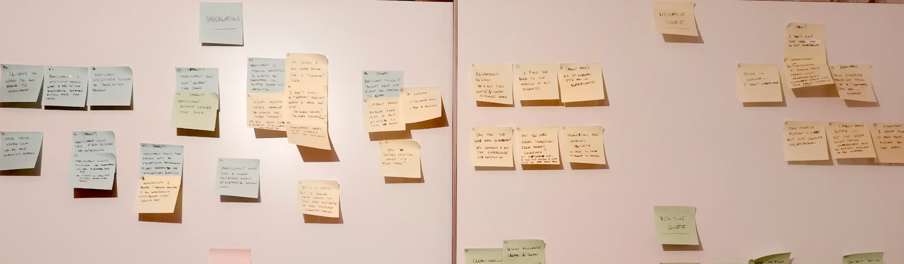
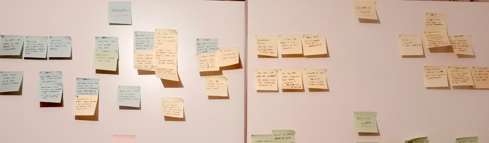

Portfolio en ligne
Un projet d'apprentissage du développement frontend avec un Portfolio en ligne à la clé.
Mon Rôle
J'étais l'unique UX/UI Designer et Développeuse Frontend.
Les Outils utilisés

Atom

GitHub
Quicktime
Présentation
Le Contexte
Nov 2021. Pendant ma formation en UX Design avec CareerFoundry, j'ai choisi la spécialisation en développement Frontend.
Le Problème
Pour devenir une bonne UX Designer, j'ai besoin d'un moyen d'apprendre ce qu'implique le rôle d'un développeur afin de mieux travailler, d'être plus efficace et de faire gagner du temps au sein d'une équipe.
L'Objectif
Avec ce projet, je vais gagner en perspectives sur les informations dont un développeur aurait besoin durant les handovers, tout en développant mon propre Portfolio en ligne et en apprenant les bases de HTML5, CSS3 et JavaScript.
Quel a été mon processus de design ?
J'ai suivi la stratégie de design du double diamant, et je suis passée par les étapes Développer et Délivrer avant d'Itérer.
1. DÉVELOPPER
Avant de commencer à coder mon Portfolio, j'ai fait quelques préparations.
- J'ai appris comment fonctionnait l'éditeur de texte Atom et j'ai télécharché des pluggins.
- J'ai créer un dossier pour le projet et j'y ai rassemblé tous les éléments de UI qui allaient m'être nécessaires (PDFs, JPEGs, PNGs, SVGs).
- J'ai étudié les mid-fi wireframes fournis pour les pages d'Accueil et À Propos De et j'ai déterminé la palette de couleurs ainsi que la typographie.
Puis, j'ai commencé à développer mon Portfolio en ligne tout en apprenant.
- J'ai construit le coeur de mon site tout en en apprenant sur HTML.
- J'ai stylisé mon site avec des polices, des couleurs et des mises en page tout en en apprenant sur CSS.
- J'ai ajouté de l'interactivité sur mon site tout en apprenant les bases de JavaScript.
Page HTML
Avec CSS
2. DÉLIVRER
Avant de tester mon Portfolio...
- J'ai créé des version Française de tous mes fichiers HTML et ajouté des sélecteurs de langues.
- J'ai utilisé un vérificateur de couleurs pour m'assurer que les couleurs utilisées étaient conformes au ratio AA.
- J'ai vérifié via un test de recherche-croisée si le site marchait bel et bien sur tous les navigateurs standards et différents appareils électroniques.
J'ai mené un test d'ergonomie pour évaluer l'intuitivité de mon Portfolio.
- J'ai modéré 5 tests d'ergonomie en face à face.
- J'ai analysé les réponses via des cartes d'affinité et une rainbow spreadsheet.
- J'ai écrit un rapport de test incluant des exigences pour de futures itérations.
 

Les points à retenir du test d'ergonomie
- Les site est propre et facile à naviguer.
- Le design visuel du site est un peu fade et manque de “peps”.
- Un petit problème de code : une image ne s'affiche pas correctement sur la page d'Accueil française.
3. ITÉRER
À la suite du rapport de test, j'ai itéré sur l'expérience de navigation de mon site ainsi que sur le design visuel.
- J'ai ajouté un onglet “PROJETS” dans la barre de navigation pour encore plus d'intuitivité.
- J'ai modifié le système de design, échangé quelques photos et images.
- J'ai corrigé le code pour l'image manquante et ai ajouté des intéractivités via JavaScript pour plus de fluidité (défilement fluide, masquer-montrer la barre de navigation...).
La page d'Accueil : avant
La page d'Accueil : après
Un Nouveau Système de Design
- Nouvelles palette de couleurs et polices.
- Nouveau logo.
- J'ai changé pour des photos de moi plus récentes et des images moins encombrées sur la page d'Accueil.
RÉSULTATS >> PROCHAINES ÉTAPES
Je suis parvenue, avec succès, à construire mon propre Portfolio en ligne que je vais utiliser lors de ma recherche de travail !
- J'ai appris à utiliser HTML5, CSS3 et JavaScript.
>> Je veux continuer à améliorer mon site donc je vais continuer à apprendre et améliorer mes connaissances et compétences dans ce domaine. - J'ai gagné de nouvelles perspectives sur comment travailler auprès de développeurs.
>> Je vais trouver un projet d'équipe sur lequel travailler afin d'accroître mes compétences en collaboration. - J'ai découvert de nouveaux outils : Atom & Github.